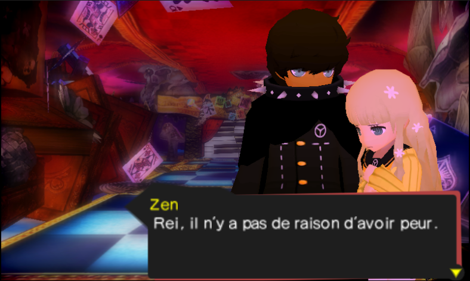
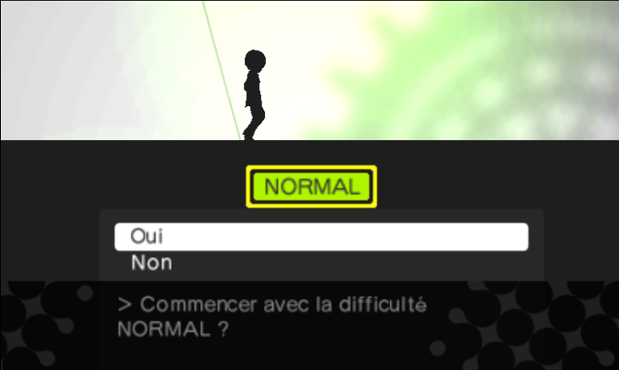
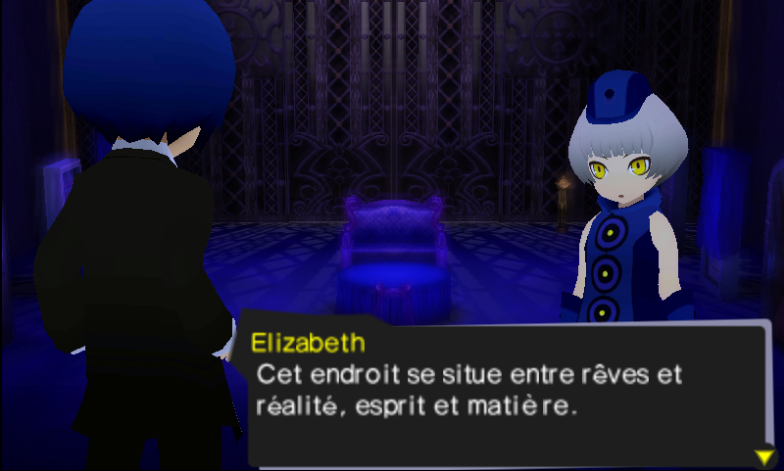
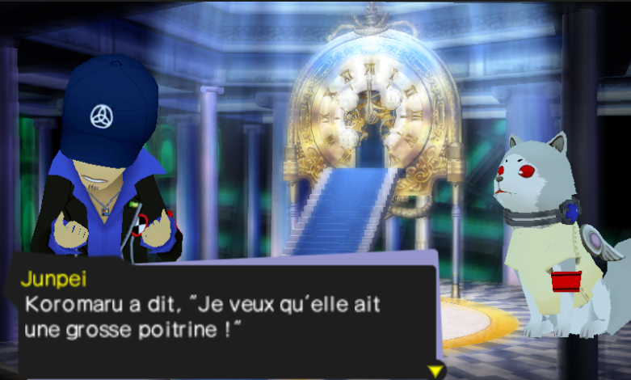
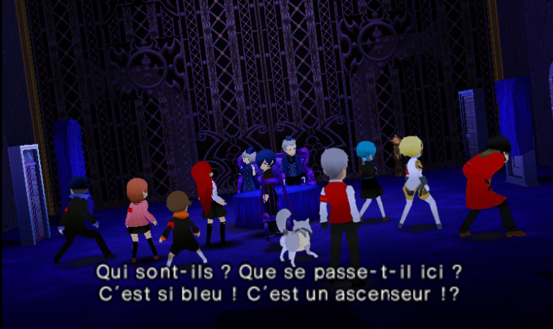

Persona Q
About the game
Persona Q is a spin‑off of the Persona series, a Megami Tensei series where the protagonist awoke their Persona, the reflection of their own. They can summon many Personas to fight, and have to improve their Social Links to use many Arcanas and obtain bonuses from these.
In Persona Q, you can control depending to your choice Makoto Yuki, the Persona 3 protagonist, or Yu Narukami, the Persona 4 protagonist. You will be immersed into a world out of the time and space and will have to find a way to get out by fixing the situation on there. The game is some kind of Dungeon Crawler (a game that put forward front dungeons exploring) where you have to make your way to the end of the labyrinth. Be aware of the Shadows that could cause you problems!
My advice
For some reason, it was my first Persona game. It helped me to discover the Persona 3 universe (and Persona in general) and captived me. Obviously, I haven't finished the story mode since I felt that I was destroying my experience with the series, but this one really attracted me to the other Persona games. Thanks to this game, I was able to discover Persona 5 Royal and then Persona 3 Reload, two games that attracted me and even attract me today! This translation project aims to first translate the Persona 3 part only since I haven't played yet the 4th game. I'll probably do it thanks to Persona 4 Revival, that will also permit me to resume this Persona Q translation project. The think that bored me the most and even now is boring me in this project? The accents implementation of course!
Screenshots




